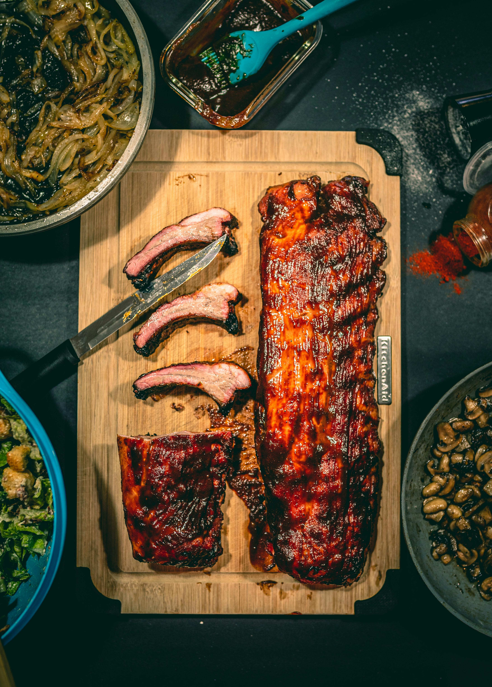

BBQ Pork Ribs

Description
- Time: Approximately 5 hours
- Calories: 650 - 800
- Servings: 1
Ingredients
- 1/2 rack of any style pork ribs
- 2 cups of barbecue sauce
- 2 tablespoons of meat seasoning
- 2 tablespoons of freshly ground pepper
Steps
- Remove fat membranes from ribs with the help of a paper towel.
- Pat dry the ribs.
- Generously season both sides of meat with ground pepper and meat seasoning. Rub into both sides.
- Place on pan and cover with foil
- Cook in oven at 275 degrees Fahrenheit for 3 to 4 hours or until tender
- Take ribs out and drain liquid. Test that ribs are done by lifting the rack with tongs. If the skin
begins to tear, then the ribs are ready!
- Rub BBQ sauce onto both sides and place the ribs back in the oven on broil for 2 minutes to crisp crust
- Rest for 15 minutes and enjoy!
Home